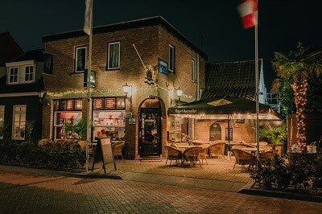
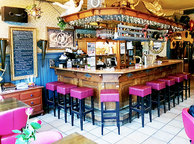
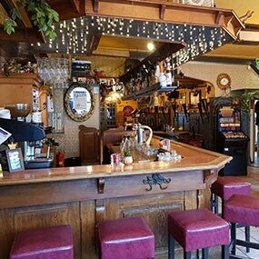
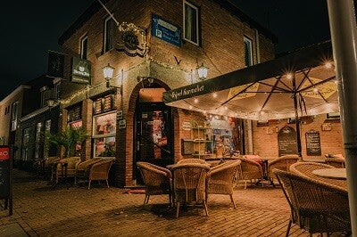
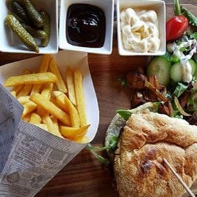
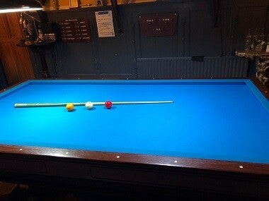
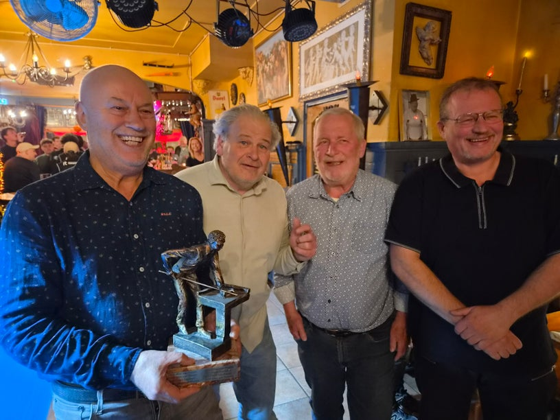
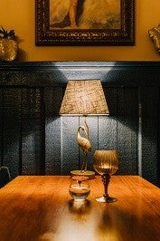
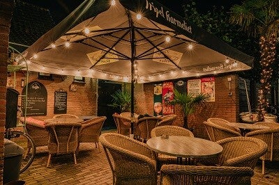

Zevende Hemel menu 27,50
Voor tomatensoep of champignonsoep
Hoofd gebakken mosselen met ui en paprika, kipfilet met barbecuesaus of roerbakgroenten in rode curry
Na ijs met slagroom, of koffie of thee met bonbon en likeurtje
Café in het hart van Terheijden
Een pilsje aan de bar, lunch op het terras, een potje biljart of uw feest in de zaak: bij De Zevende Hemel kan bijna alles.

In het hart van Terheijden, met aan de voorkant een terras en achter de zaak een terras met parkeergelegenheid. Regelmatig is er live muziek en zijn er themafeesten.




Mogelijkheid voor lunch, diner, high bubbels, diverse keuzemenu's, barbecue en diverse buffetten. In De Reddende Engel, achter in de zaak, eet u rustig een hapje, en natuurlijk kan dat ook op ons achterterras.
€ 42,50 per persoon
Met bijpassende garnituren. Reserveren en uw keuze doorgeven tot en met 22 december.
Hoofdgerechten worden geserveerd met friet, aardappelkroketjes of rijst en een salade (tenzij anders vermeld). vega = vegetarisch of vegan.
Zin in een speciale koffie na het eten? Vraag naar de drankenkaart.
De planken zijn niet te bestellen tijdens het diner.
Voor groepen vanaf 10 personen, vooraf reserveren. Alle voorgerechten met stokbrood en kruidenboter; hoofdgerechten met friet, aardappelgratin, gemengde salade en sausjes. Bij alle menu's mag u in plaats van een nagerecht ook koffie of thee nemen met een likeurtje en een bonbon.
Vanaf 2 personen, alleen op reservering en minstens 1 dag van tevoren.
Prijzen in euro's, onder voorbehoud. Bent u niet tevreden? Vertel het ons.
"Wie drinkt, die denkt"
Iedere laatste donderdagavond van de maand, aanvang 20.30 uur. Inschrijfgeld € 2,00 p.p.: 75% gaat naar het prijzengeld, 25% naar het beste team van het seizoen.
Elke 2e donderdag van de maand vanaf 19.00 uur: 3 speciaalbieren met bitterballen voor € 15,00, kaart aan de bar. De sjoelbak en spelletjes staan klaar.
Elke 3e donderdag van de maand vanaf 19.00 uur: 3 glazen (wijn, port of Stelz) met worst en kaas voor € 13,50.
Bij voldoende belangstelling: van 21.00 tot 03.00 uur, met snackjes, nootjes en zoutjes, om 24.00 uur een glaasje bubbels en aan het eind een worstenbroodje of kaasbroodje. Kaart € 60,00 p.p. voor pils, fris, wijn, Steltz, rosébier, Hoegaarden wit, Leffe dubbel en Jupiler; vooraf kopen en contant betalen. Mixdrankje € 3,00 bij.
Regelmatig is er live muziek of een themafeest in de zaak. Vraag aan de bar wat er op de planning staat.
Verjaardag, receptie, babyborrel of koffietafel: wij regelen het eten en drinken. Muziek met uw eigen installatie zonder dj is gratis. Prijzen per persoon, onder voorbehoud. Meer weten? Bel 076 593 22 11.
Receptie: hapjes per stuk; de prijs hangt af van het aantal personen en rondes (advies: 2x per uur).
Vanaf 40 personen 10% korting op de drankjes (behalve koffie en thee).


Het café is de thuisbasis van biljartvereniging de 7de hemel. De laatste Gerrit Verweijmeren Trofee ging naar Johan Ossenblok.
Achter in de zaak eet u rustig in De Reddende Engel. Bij mooi weer zit u op het terras achter het café, met parkeergelegenheid ernaast.


De schoonmaakspullen van de Zevende Hemel zoeken een interieurverzorgster voor de maandagochtend (3 uur). Interesse? Vraag het aan de bar of bel ons.
076 593 22 11 06 42 46 05 09 de.zevendehemel@ziggo.nl
Vragen over een feest of barbecue? Stuur ons een bericht.